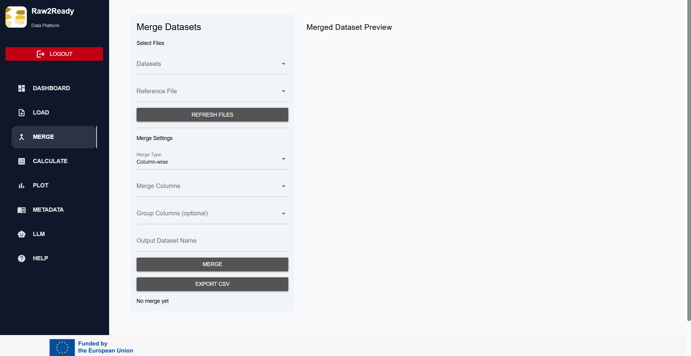
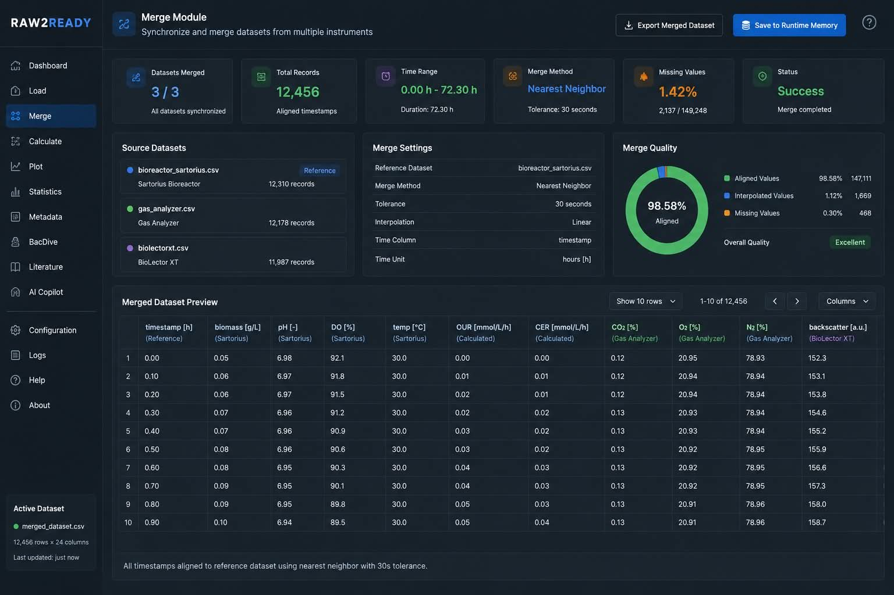

Merge Module
Synchronize heterogeneous experimental datasets into a unified time-series representation.
Overview
Experimental fermentation campaigns typically generate multiple datasets originating from different laboratory instruments. Each device records measurements independently and often operates at different acquisition frequencies.
The Merge Module integrates these heterogeneous datasets into a single synchronized table, allowing downstream calculations, visualization, statistical analysis and AI-assisted reasoning to operate on one consistent experimental dataset.
Objectives
- Synchronize multiple datasets.
- Align timestamps automatically.
- Preserve experimental chronology.
- Minimize temporal inconsistencies.
- Generate one unified dataset.
- Prepare data for downstream modules.
Why Dataset Merging is Necessary
During fermentation experiments, different instruments rarely produce synchronized measurements.
For example:
- Bioreactors may record sensor values every minute.
- Gas analyzers may record every 30 seconds.
- BioLectorXT systems may export measurements every few minutes.
- Manual laboratory measurements may be recorded only once every several hours.
Without temporal synchronization, these datasets cannot be analysed together effectively.
Merge Concepts
The Merge Module combines datasets based on their temporal relationship rather than their row positions.
Instead of matching rows directly, Raw2Ready aligns observations according to their datetime values, preserving the chronological evolution of the fermentation process.
Sensor Dataset
│
Gas Analyzer
│
BioLectorXT
│
Laboratory Measurements
│
▼
Time Alignment
▼
Merged Dataset
Supported Merge Strategies
| Strategy | Description | Typical Use |
|---|---|---|
| Exact Match | Merge rows sharing identical timestamps. | Perfectly synchronized devices. |
| Nearest Neighbor | Select the closest available measurement. | Different sampling frequencies. |
| Reference Dataset | Use one dataset as the temporal reference for all others. | Industrial fermentation experiments. |
| Left Join | Preserve all observations from the reference dataset. | Recommended default strategy. |
Merge Workflow
The Merge Module executes a structured workflow to synchronize multiple heterogeneous datasets into a unified experimental representation.
Load Reference Dataset
│
Load Additional Datasets
│
Validate Datetime Columns
│
Sort Chronologically
│
Apply Merge Strategy
│
Generate Unified Dataset
│
Store in Runtime Memory
Reference Dataset
Every merge operation begins by selecting a reference dataset. The timestamps contained in this dataset become the temporal backbone of the merged experiment.
All additional datasets are synchronized against these timestamps, ensuring that every measurement is aligned with the experimental timeline.
In most fermentation experiments the primary bioreactor dataset is selected as the reference dataset because it contains the complete process timeline.

Datetime Synchronization
Time synchronization represents the most important stage of the Merge Module. Every imported dataset contains timestamps that must be converted into a common temporal representation.
- Datetime parsing
- Timezone normalization
- Chronological sorting
- Duplicate timestamp detection
- Timestamp consistency verification
- Reference timeline creation
Dataset A
08:00
08:01
08:02
08:03
Dataset B
08:00:20
08:01:22
08:02:18
↓
Common Timeline
08:00
08:01
08:02
08:03
Nearest-Neighbor Alignment
Experimental devices frequently operate using different acquisition frequencies. In these situations exact timestamp matching is impossible.
Raw2Ready therefore applies a nearest-neighbor alignment strategy, matching each reference timestamp to the closest available measurement.
| Reference Time | Closest Measurement | Difference |
|---|---|---|
| 08:00:00 | 08:00:07 | 7 sec |
| 08:01:00 | 08:00:58 | 2 sec |
| 08:02:00 | 08:02:05 | 5 sec |
Merge Quality Control
Following synchronization, Raw2Ready performs a series of quality-control procedures to ensure the integrity of the merged dataset.
- Chronological consistency
- Duplicate row detection
- Missing timestamp detection
- Column validation
- Dataset dimension verification
- Integrity reporting
Automatic validation ensures that synchronization errors are detected before statistical analysis or AI-assisted reasoning begins.
NiceGUI Merge Interface
The Merge Module is fully integrated into the Raw2Ready graphical user interface, enabling users to configure merge operations interactively.
- Select reference dataset
- Select additional datasets
- Choose merge strategy
- Configure datetime column
- Preview merged output
- Export merged dataset

Runtime Memory Integration
Once merging has completed successfully, the resulting dataset replaces the previous active dataset inside the Runtime Memory Manager.
Load Module
│
▼
Runtime Memory
│
▼
Merge Module
│
Merged Dataset
│
▼
Runtime Memory
│
├── Calculate Module
├── Plot Module
├── Statistics Module
├── Metadata Module
└── AI Agents
By storing the merged dataset in Runtime Memory, every downstream component accesses the same synchronized experimental representation without requiring additional disk operations.
Exporting the Merged Dataset
After synchronization is complete, Raw2Ready generates a unified experimental dataset that can be used by every downstream module.
The merged dataset preserves the complete experimental timeline while combining variables originating from multiple laboratory instruments.
- CSV export
- Microsoft Excel export
- Automatic filename generation
- Preservation of original timestamps
- Compatible with all Raw2Ready modules

Best Practices
Following these recommendations helps ensure accurate synchronization and reliable downstream analysis.
- Use the primary bioreactor dataset as the reference dataset whenever possible.
- Verify datetime formats before merging.
- Ensure all datasets use the same timezone.
- Remove duplicate timestamps before synchronization.
- Check for missing observations after the merge process.
- Review merged variables before continuing with calculations.
- Keep the original datasets unchanged for reproducibility.
Troubleshooting
| Problem | Possible Cause | Solution |
|---|---|---|
| Merge failed | Missing datetime column | Verify that every dataset contains a valid datetime variable. |
| Empty merged dataset | Incorrect merge strategy | Try Nearest-Neighbor or Reference Dataset merging. |
| Duplicate timestamps | Experimental export issue | Remove duplicate observations before merging. |
| Incorrect alignment | Datetime parsing error | Verify timestamp formatting and timezone consistency. |
| Missing variables | Dataset selection error | Confirm all required datasets were included in the merge. |
Summary
The Merge Module is responsible for transforming multiple heterogeneous experimental datasets into a single synchronized representation.
Through automatic datetime alignment, nearest-neighbor synchronization, quality validation and Runtime Memory integration, Raw2Ready provides a robust foundation for all subsequent processing stages.
Accurate dataset synchronization is essential for reliable statistical analysis, visualization, metadata integration and AI-assisted reasoning.
Next Step
Once datasets have been merged successfully, the resulting unified dataset can be processed by the Calculate Module, where users may compute derived variables, biochemical parameters and custom mathematical expressions.